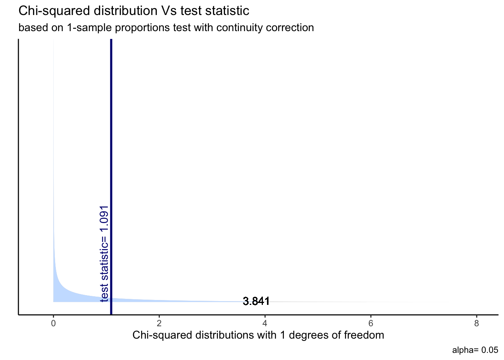
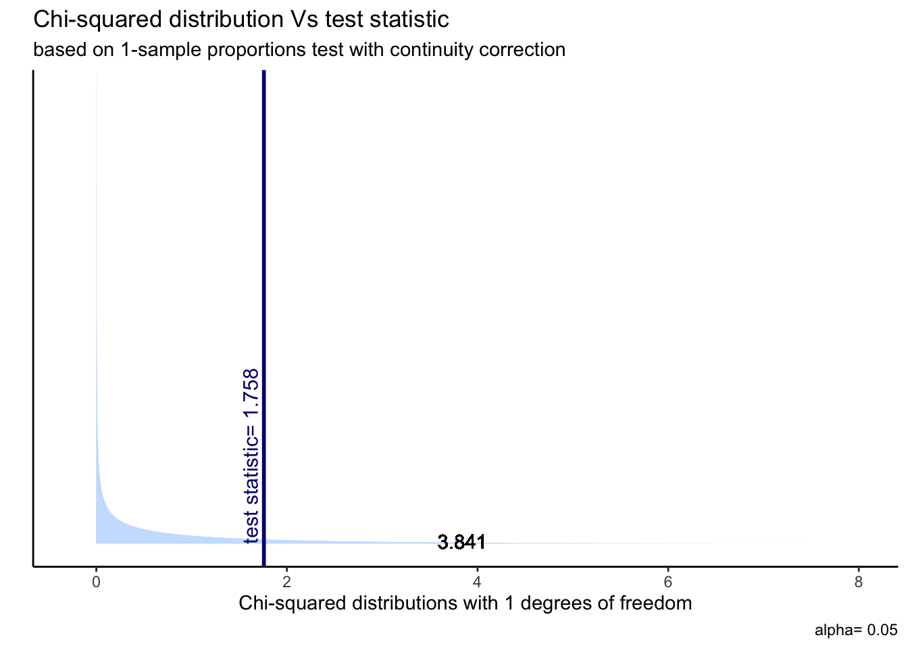
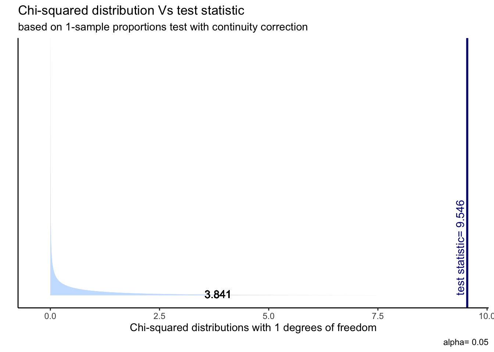
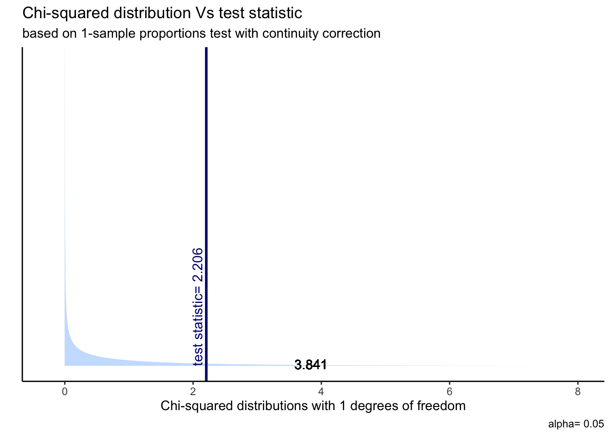
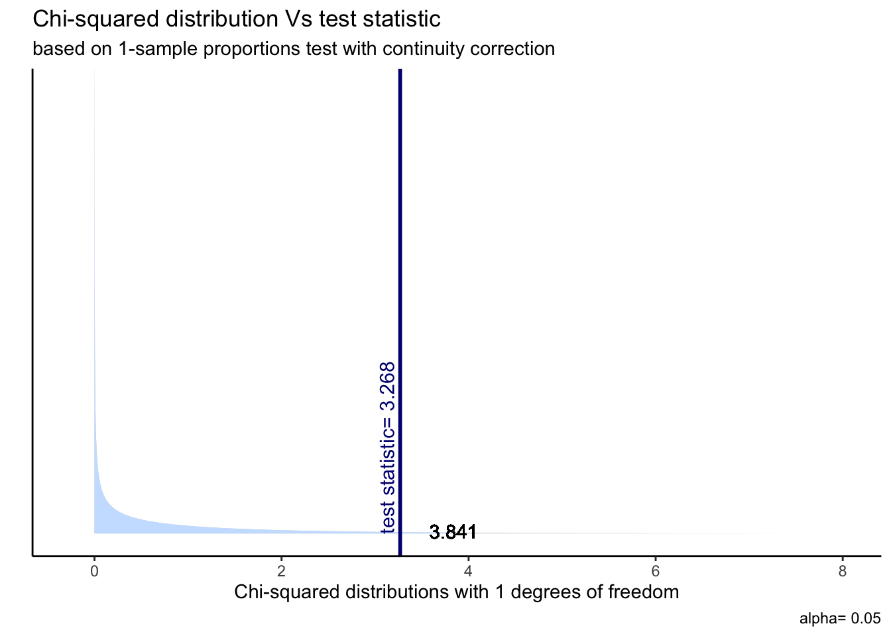
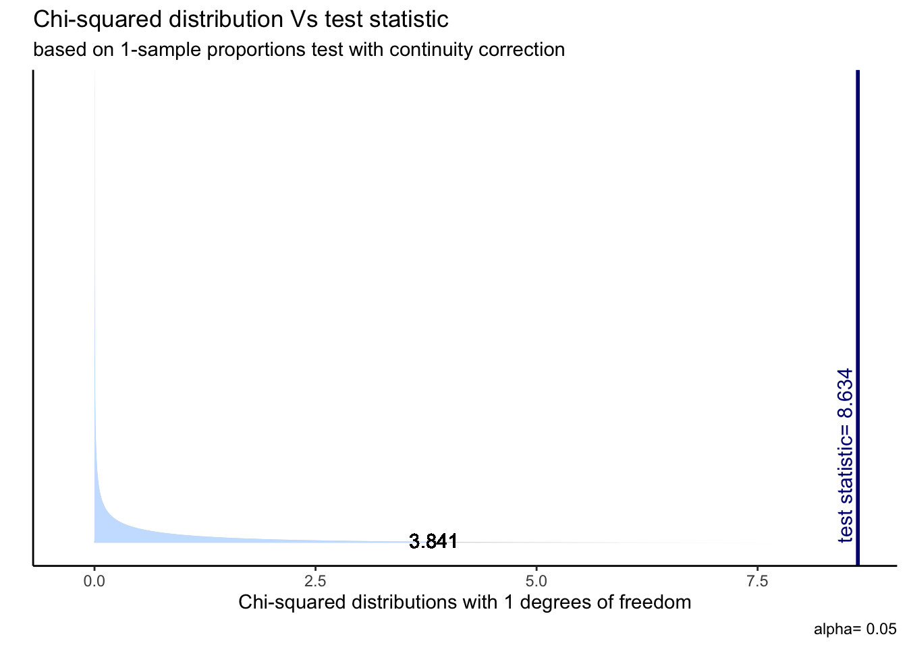
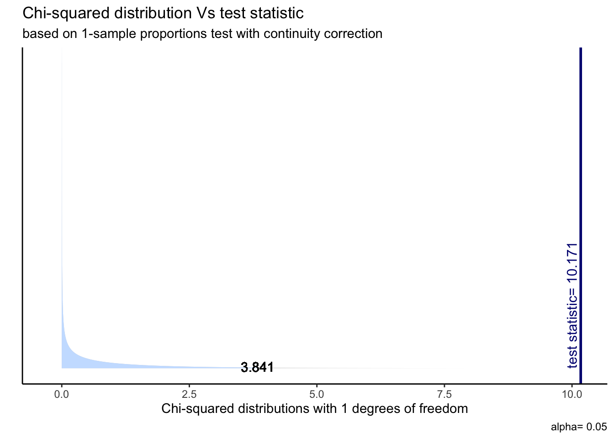

To examine this idea, we manipulated our data in four phases:
1) Merged two data sources into one that accounts for every utterance being said and who said it.
2) Added a column that holds whether being said by a Male or Female.
3) Aggregated the number of utterances by emotions and sex.
4) Conducted a proportion test for each of the emotions.
In the table below, we can see the completed table.
emotion_final## emotion Male Female
## 1 Joyful 1080 1031
## 2 Mad 528 573
## 3 Neutral 1509 1343
## 4 Peaceful 482 436
## 5 Powerful 408 357
## 6 Sad 296 373
## 7 Scared 744 625The model we chose to answer our second question is the proportion test. We took every emotion and checked if the proportion of the number of expressions by female was equal to 50%.
Joyful proportion test
H_0: Females feel Joyful as males: P=0.5
H_1: Females feel Joyful differently than males: P!=0.5
Joy_test <- prop.test(x = emotion_number$Female[1], n = sum(emotion_number[1,]))##
## 1-sample proportions test with continuity correction
##
## data: emotion_number$Female[1] out of sum(emotion_number[1, ]), null probability 0.5
## X-squared = 1.0914, df = 1, p-value = 0.2962
## alternative hypothesis: true p is not equal to 0.5
## 95 percent confidence interval:
## 0.4668750 0.5099559
## sample estimates:
## p
## 0.4883941As can be seen, the p-value is much higher than 0.05, which means we accept our null hypothesis - females feel joyful as males.

Mad proportion test
H_0: Females feel Mad as males: P=0.5
H_1: Females feel Mad differently than males: P!=0.5
Mad_test <- prop.test(x = emotion_number$Female[2], n = sum(emotion_number[2,]))##
## 1-sample proportions test with continuity correction
##
## data: emotion_number$Female[2] out of sum(emotion_number[2, ]), null probability 0.5
## X-squared = 1.7584, df = 1, p-value = 0.1848
## alternative hypothesis: true p is not equal to 0.5
## 95 percent confidence interval:
## 0.4904531 0.5502746
## sample estimates:
## p
## 0.520436As can be seen, the p-value is higher than 0.05, which means we accept our null hypothesis - females feel mad as males.

Neutral proportion test
H_0: Females feel Neutral as males: P=0.5
H_1: Females feel Neutral differently than males: P!=0.5
Neutral_test <-prop.test(x = emotion_number$Female[3], n = sum(emotion_number[3,]))##
## 1-sample proportions test with continuity correction
##
## data: emotion_number$Female[3] out of sum(emotion_number[3, ]), null probability 0.5
## X-squared = 9.5459, df = 1, p-value = 0.002004
## alternative hypothesis: true p is not equal to 0.5
## 95 percent confidence interval:
## 0.4524551 0.4894191
## sample estimates:
## p
## 0.4708976As can be seen, the p-value is less than 0.05, which means we deny our null hypothesis - Females do not feel neutral as males.
Because of the area of the 95 percent confidence, we can infer that males
feel more neutral than females.

Peaceful proportion test
H_0: Females feel Peaceful as males: P=0.5
H_1: Females feel Peaceful differently than males: P!=0.5
Peacful_test <- prop.test(x = emotion_number$Female[4], n = sum(emotion_number[4,]))##
## 1-sample proportions test with continuity correction
##
## data: emotion_number$Female[4] out of sum(emotion_number[4, ]), null probability 0.5
## X-squared = 2.2059, df = 1, p-value = 0.1375
## alternative hypothesis: true p is not equal to 0.5
## 95 percent confidence interval:
## 0.4422729 0.5078305
## sample estimates:
## p
## 0.4749455As can be seen, the p-value is more than 0.05, which means we accept our null hypothesis - females feel Peaceful as males.

Powerful proportion test
H_0: Females feel Powerful as males: P=0.5
H_1: Females feel Powerful differently than males: P!=0.5
Powerful_test <- prop.test(x = emotion_number$Female[5], n = sum(emotion_number[5,]))##
## 1-sample proportions test with continuity correction
##
## data: emotion_number$Female[5] out of sum(emotion_number[5, ]), null probability 0.5
## X-squared = 3.268, df = 1, p-value = 0.07064
## alternative hypothesis: true p is not equal to 0.5
## 95 percent confidence interval:
## 0.4309215 0.5027510
## sample estimates:
## p
## 0.4666667As can be seen, the p-value is more than 0.05, which means we accept our null hypothesis - females feel powerful as males.
ggproptest(Powerful_test)
Sad proportion test
H_0: Females feel Sad as males: P=0.5
H_1: Females feel Sad differently than males: P!=0.5
Sad_test <- prop.test(x = emotion_number$Female[6], n = sum(emotion_number[6,]))##
## 1-sample proportions test with continuity correction
##
## data: emotion_number$Female[6] out of sum(emotion_number[6, ]), null probability 0.5
## X-squared = 8.6338, df = 1, p-value = 0.0033
## alternative hypothesis: true p is not equal to 0.5
## 95 percent confidence interval:
## 0.5189401 0.5954869
## sample estimates:
## p
## 0.5575486As can be seen, the p-value is less than 0.05, which means we deny our null hypothesis - Females do not feel sad as males.
Because of the area of the 95 percent confidence, we can infer that
females feel sadder than males.

Scared proportion test
H_0: Females feel Scared as males: P=0.5
H_1: Females feel Scared differently than males: P!=0.5
Scared_prop <-prop.test(x = emotion_number$Female[7], n = sum(emotion_number[7,]))##
## 1-sample proportions test with continuity correction
##
## data: emotion_number$Female[7] out of sum(emotion_number[7, ]), null probability 0.5
## X-squared = 10.171, df = 1, p-value = 0.001427
## alternative hypothesis: true p is not equal to 0.5
## 95 percent confidence interval:
## 0.4299476 0.4833742
## sample estimates:
## p
## 0.4565376As can be seen, the p-value is less than 0.05, which means we deny our null hypothesis - Females do not feel Scared as males.
Because of the area of 95 percent confidence, we can infer that males
feel more scared than females.
